「12 (ジュウニ) 」シリーズのコンセプトは『暮らしを自由にするオフィス』。住まいの機能の一部をオフィスに持たせると銘打つだけあり、そこには十分なホスピタリティがあります。
例えば上の写真。こちらはラウンジ（写真左）と打ち合わせスペース（写真右）、そしてセミナースペース（写真奥）が併設される8階のフロアですが、その手前側には広いキッチンスペースとカウンターがあります。
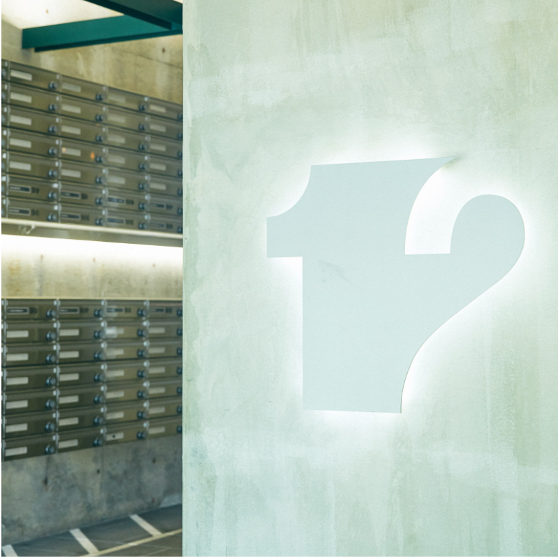
2022.08.25
朝出社して、仕事を終えて帰宅する頃には洋服が綺麗になっている。例えばそんなことができたらどうでしょう。LG Stylerは自宅だけでなく、オフィスに備えてあってもそのメリットを強く実感することができる製品。今回取材をさせていただいたのは、リビタが運営するシェアオフィス「12 (ジュウニ) 」シリーズの『12SHINJUKU』と『12SHINJUKU3CHOME』。部屋の空き待ちも多い人気シェアオフィスのホスピタリティを覗かせていただきました。
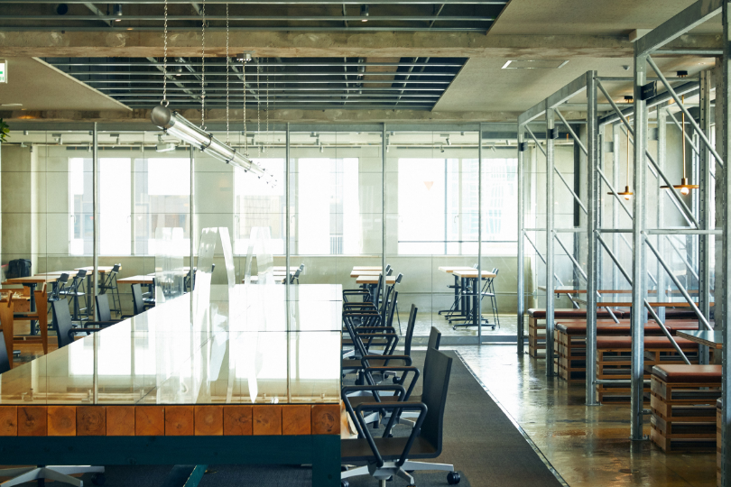
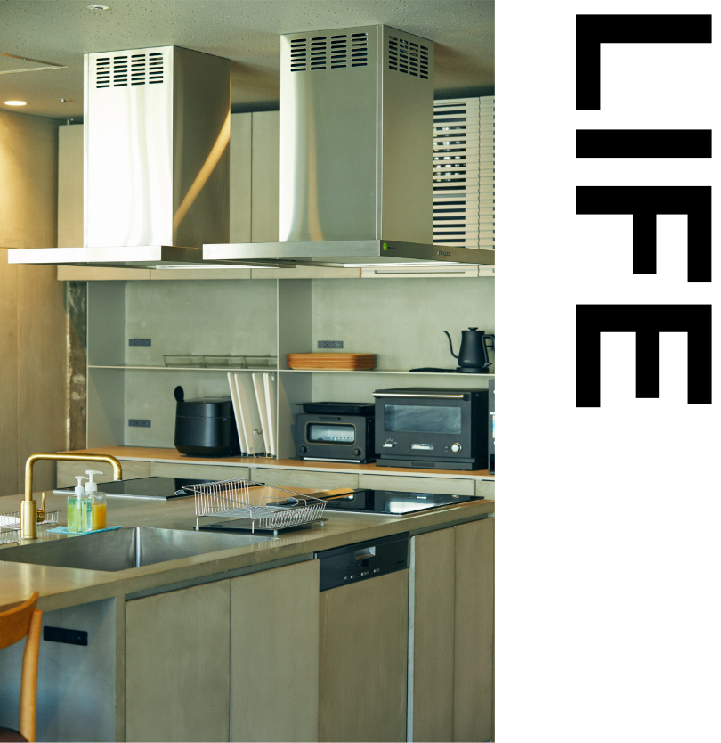
レンジやオーブン、炊飯器やIHコンロのあるキッチンスペースもあり、貸切（予約制）で社内イベントなどにも利用可能。
そして7階には『LDK』と名前がつけられたスペースも併設。心地よく日差しが差し込むLDKスペースでは仮眠をしたり食事をしたり、まさに自宅にいるかのようにくつろぐことが可能。
そして7階には『LDK』と名前がつけられたスペースも併設。心地よく日差しが差し込むLDKスペースでは仮眠をしたり食事をしたり、まさに自宅にいるかのようにくつろぐことが可能。
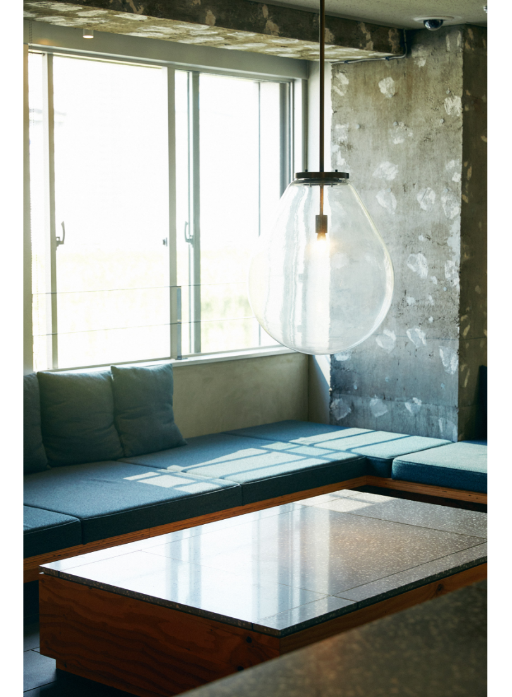
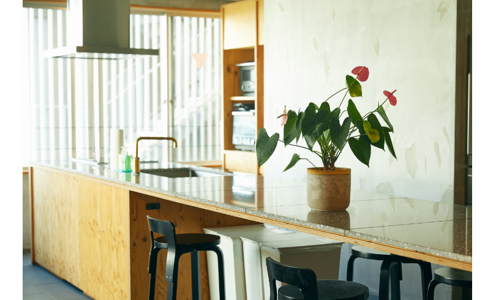
こちらにもレンジやオーブン、炊飯器やIHコンロのあるキッチンスペースがあり、誰もが利用可能。職場で自炊できる環境が整っています。さらにその隣の部屋にはランドリーも設置される充実ぶり。想像以上の環境がここにはありました。
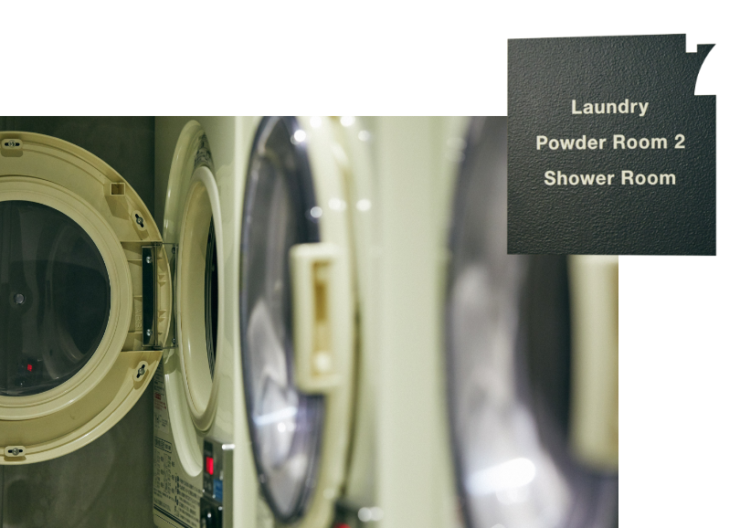
LG Stylerがあるのは7階。ランドリールームのそばに設置されています。
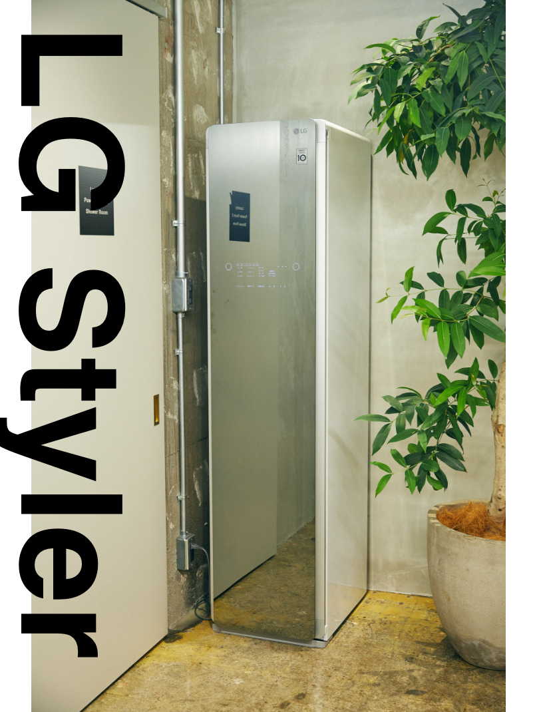
入居者であれば誰でも利用可能。着てきたアウターやオフィスで使用しているクッションなど、気がついた時にいつでもケアすることが可能。まさに暮らしの一部をオフィスに取り入れた好例といえます。
このオフィスのデザインを手掛けたのは、世界的に活躍する建築家、谷尻誠・吉田愛率いる建築設計事務所SUPPOSE DESIGN OFFICE。デスクやチェア、照明など、至る所までデザインが行き届いています。いい仕事は心地よい空間から。仕事が充実すればライフスタイルも豊かに感じられる。ここはただのシェアオフィスではなく、生活の好循環を生む場所かもしれません。
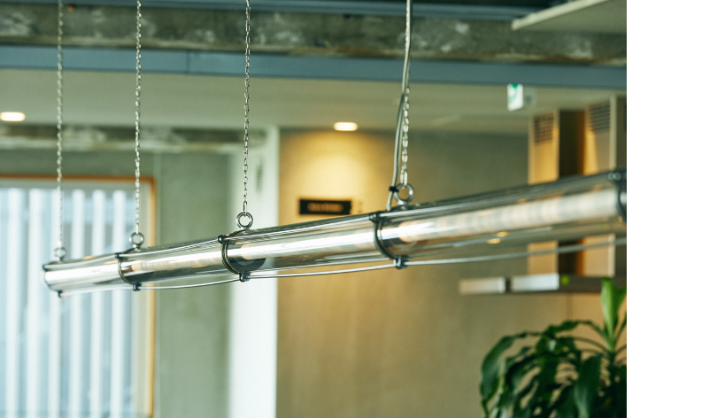
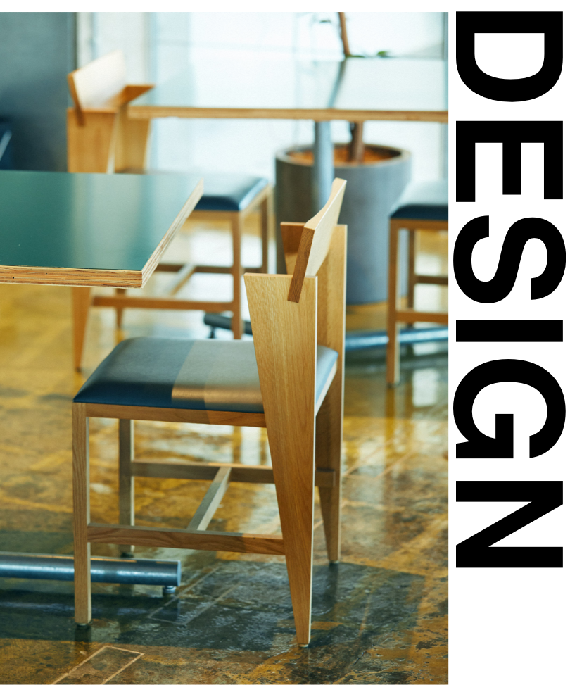
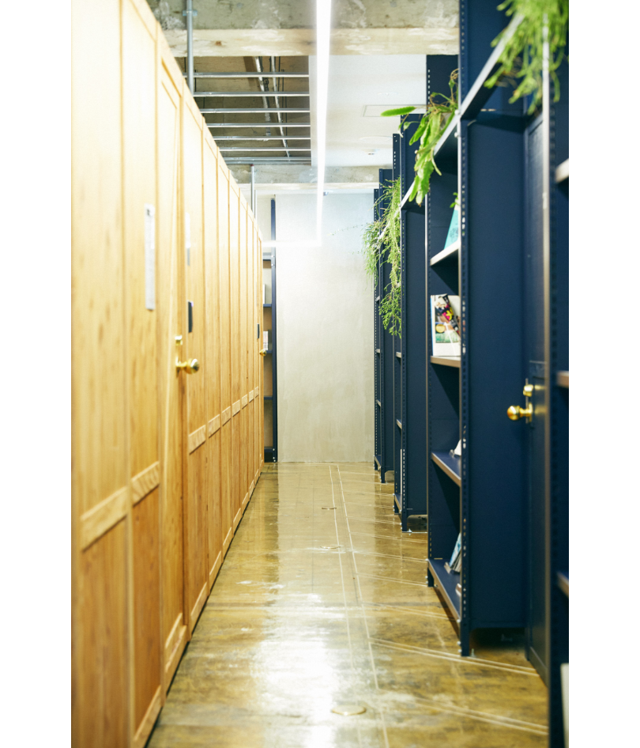
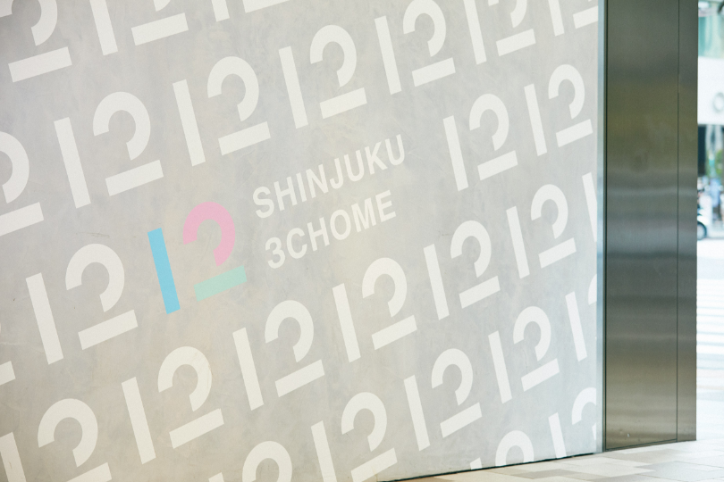
新宿にはリビタが運営するシェアオフィスがもうひとつ。それが12SHINJUKU3CHOMEです。場所は、その名の通り新宿3丁目。12SHINJUKUとはまた違った、淡い色合いのインテリアが特徴です。
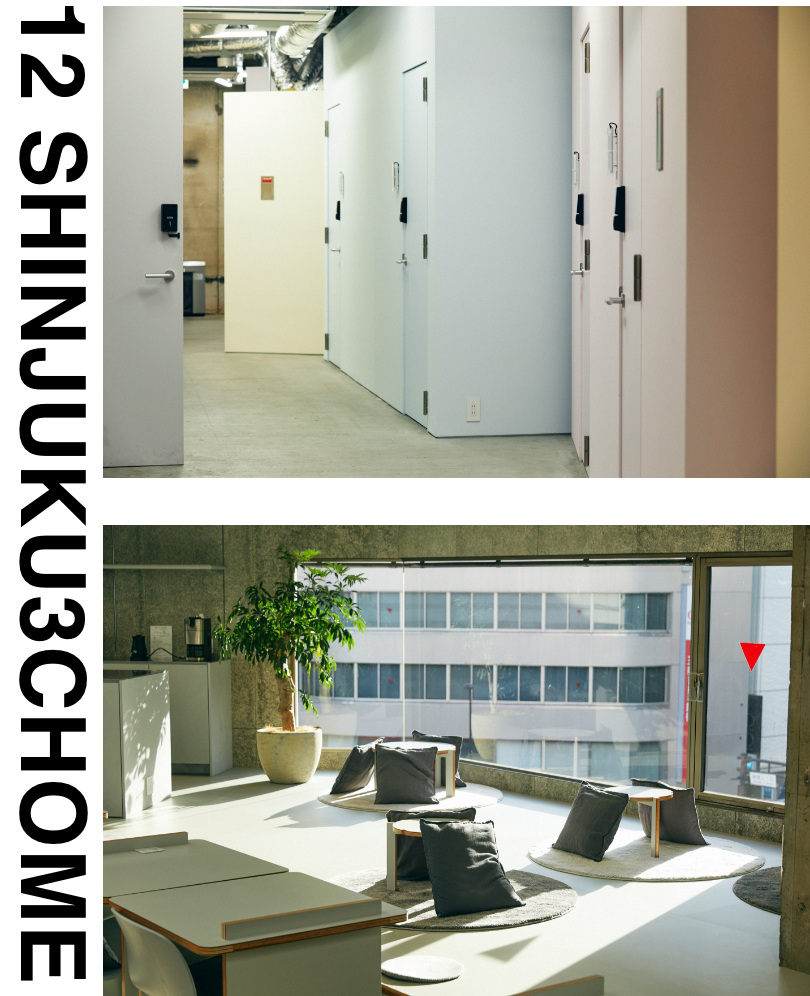
コンセプトは同じで、こちらにも心地のいいLDKスペースが。そこにあるキッチンスペースの一角にLG Stylerが設置されています。
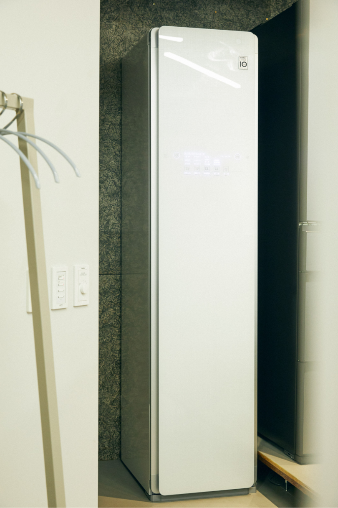
『住まいは、遠くても、広くなくても、自分らしく暮らせる。1stPLACE + 2ndPLACE = 12。オフィスを「住に」。暮らしを「自由に」』。そんな新しい時代の働き方を提案する12SHINJUKUと12SHINJUKU3CHOME。
同じく新しい生活スタイルを提案するLG Styler。
ここは、豊かな生活を追い求める両者が共鳴する空間です。
同じく新しい生活スタイルを提案するLG Styler。
ここは、豊かな生活を追い求める両者が共鳴する空間です。
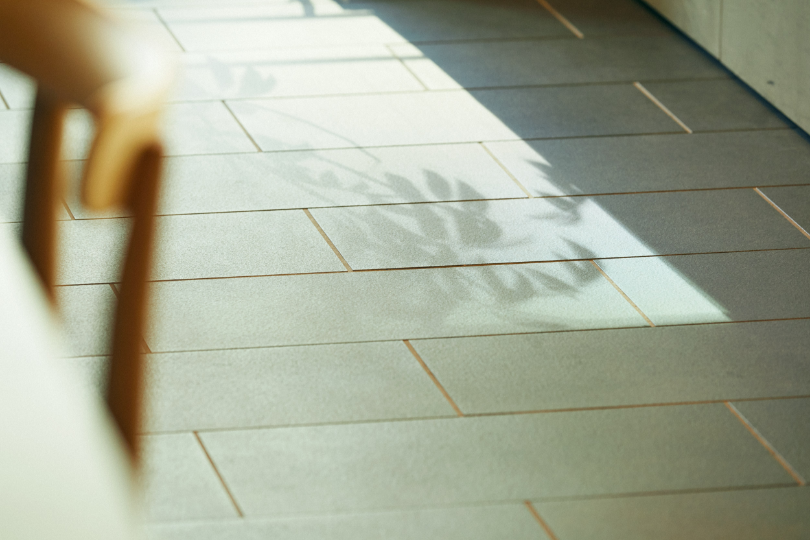
Interview CATAL DESIGN